Beach before the big game: One more morning in Leme: red flag for dangerous currents, caipirinhas in the sand.
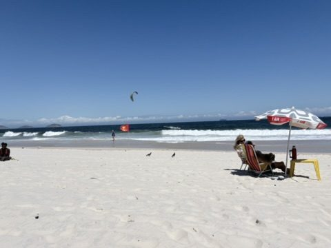
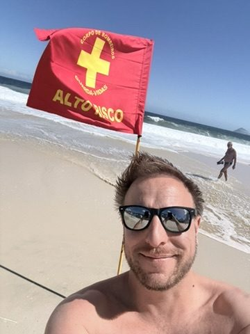
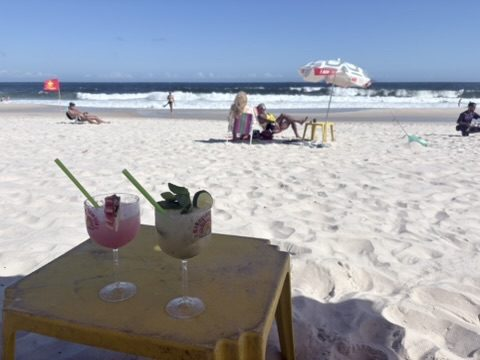
Before the match: In the afternoon to Maracanã. In an old botequim, Fluminense fans gather in maroon, green and white – and we are right in the middle. The closer to the stadium, the denser the crowd.
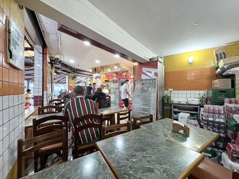
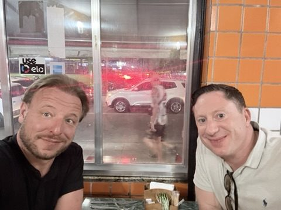
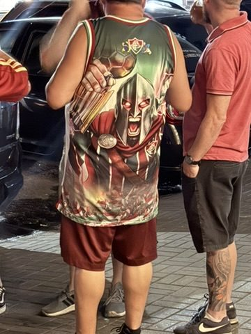
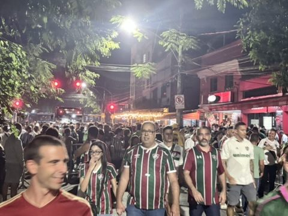
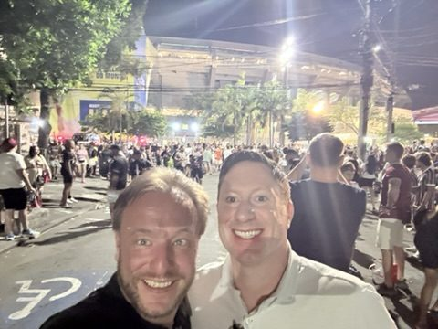
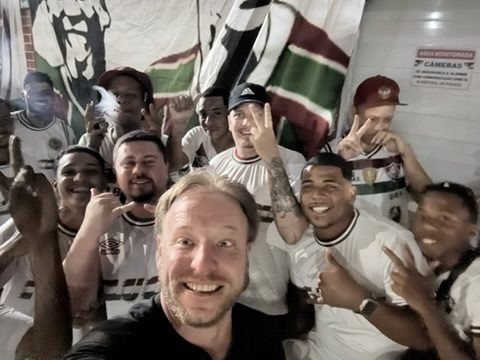
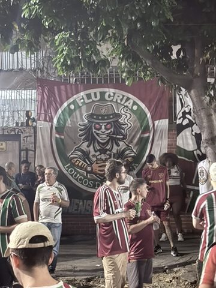
Fla-Flu at the Maracanã: The Maracanã was built for the 1950 World Cup; its official name is Estádio Jornalista Mário Filho, after the journalist who made the Fluminense vs Flamengo derby famous as the "Fla-Flu". The rivalry dates back to 1912. That night Fluminense win 2–1 – goals from Lucho Acosta (a stunner) and Serna. Flu's first Fla-Flu win of the year, and a setback for Flamengo in the title race.
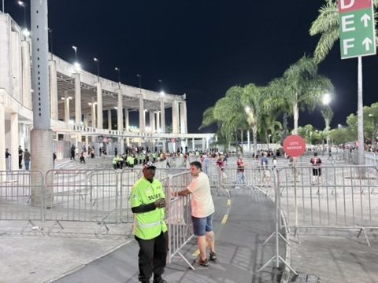
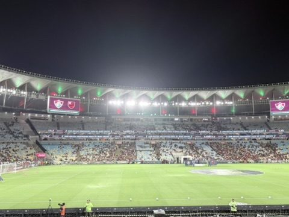
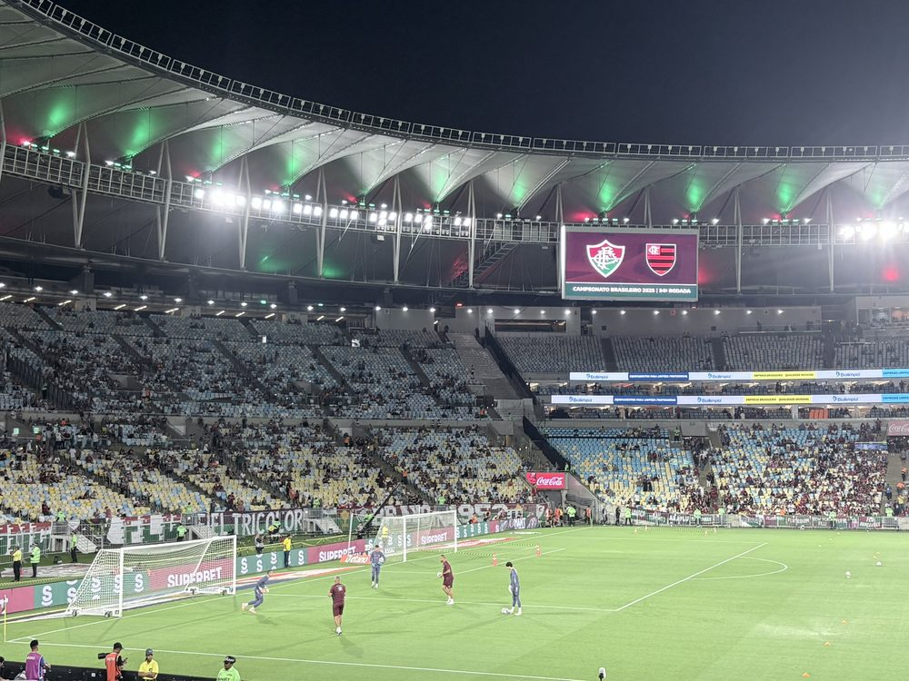
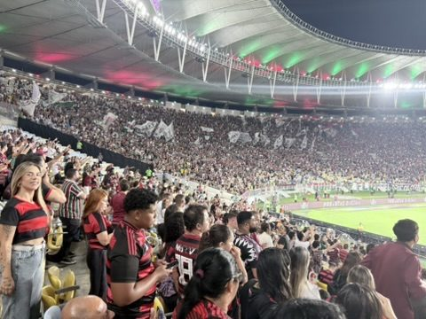
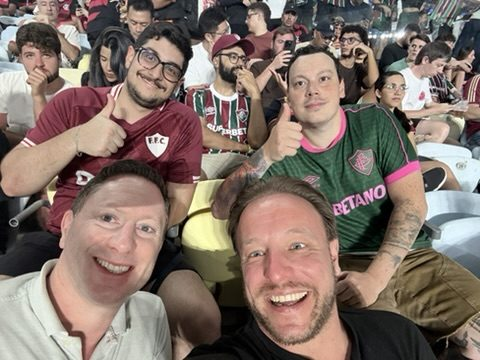